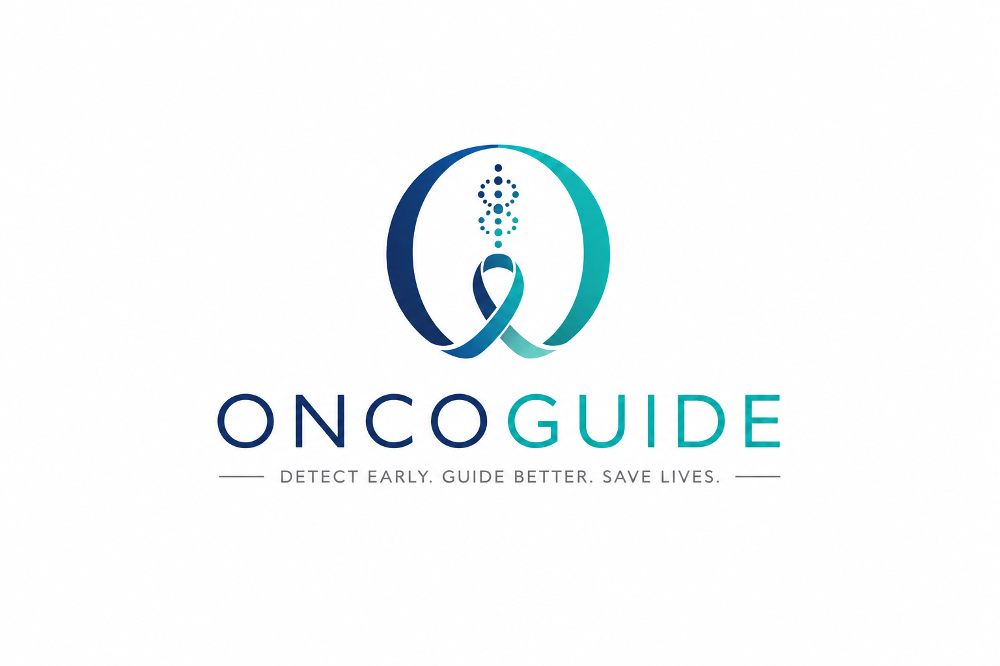

Presentation shortcuts
Load synthetic examples to demonstrate pathway activation and reporting. Never use these examples as real patient data.

Integrated cancer assessment workflow · presentation build 1.3.8
Load synthetic examples to demonstrate pathway activation and reporting. Never use these examples as real patient data.